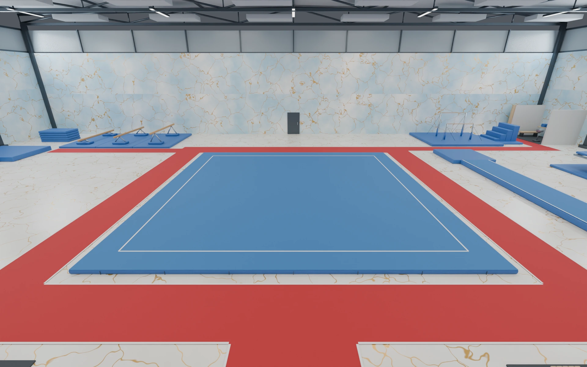

Lana Harkin / Selected work / 2026
AI for Interdisciplinary
Design Portfolio.
Image-making. Space-making. A little play.Explore the projects ↓
Make a little mischief.
Click or tap for a raccoonHeart-holders, sleepy royals & bow-tied buddies.
Selected projects
01 — 03
01 / Album cover
AM — Arctic Monkeys
Translating a sound into a visual signal.

02 / 3D environment
Futuristic Gymnastics Gym 2035
A gymnastics space designed around movement.

03 / Web game proposal
Cosmic Daydreamer — The Planet of Lost Dreams
A cozy adventure about imagination, discovery, and wonder.